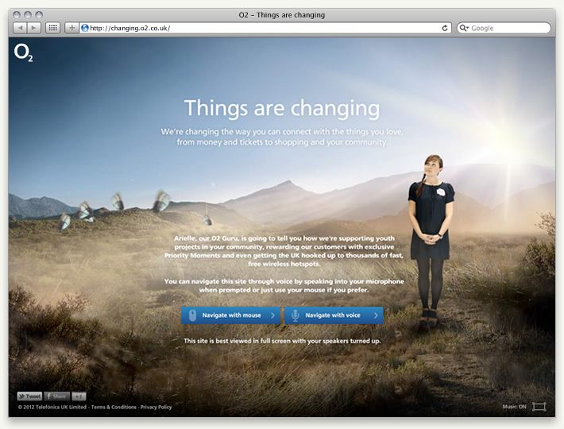
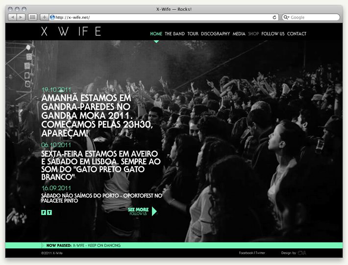

My Studio
My Book
My Blog
My GitHub
My LinkedIn
— Projects
Astellas App
Millia Oz
Things are changing
Hiscox Installation
X-Wife
Zippy games
Opel Astra 2010 adverts
Oonique Candles
Augmented Reality demos
Casinos de Angola
Mais Que Um Sapato
Galp Tangerina Manual
Volta ao Mundo
Graphic Design ventures
Grão Vasco
Illustrations
Vale do Lobo kiosks
Vale do Lobo (.com)
Miguel Praia (.com)
Miguel Praia WSBK'04
Once Online Projects
Never Online Projects
— By the way
About
Contacts
Welcome!
I'm João Pescada, a Senior Creative Developer in London, UK.
And this is a collection of selected works.
(yes, a bit outdated!)
Need help with your idea? Hire me.
— Featured:

Things are changing awarded FWA SOTD on June 8
th
2012

X-Wife awarded Silver at Festival Clube de Criativos 2012